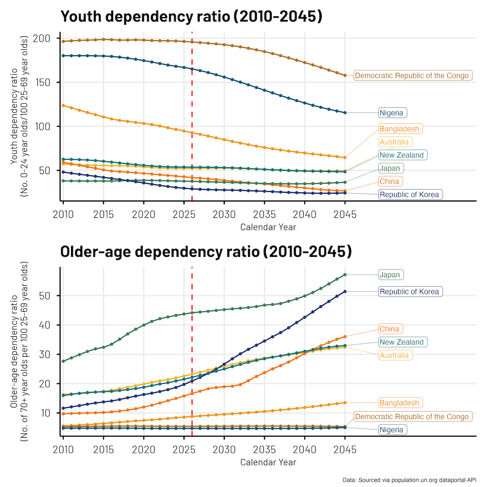
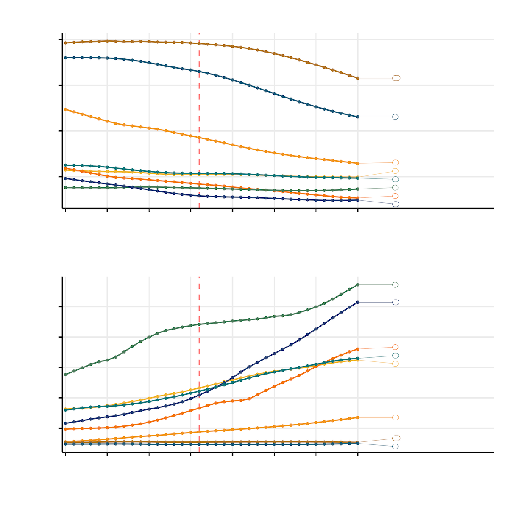
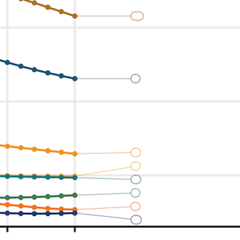
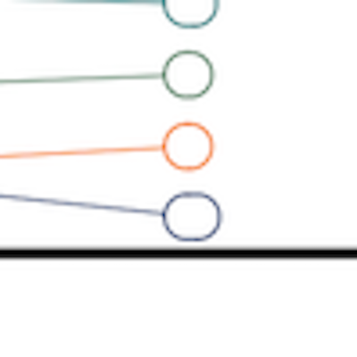

Code
library(thekidsbiostats) # install with install.packages("thekidsbiostats", repos = "the-kids-biostats.r-universe.dev")Dr Matt Cooper
March 23, 2026
The United Nations Population Division, in addition to doing really important and interesting work, also make a lot of robustly collected and compiled data available to the public. Conveniently, this can be source from their data portal api - once you have requested and received a token.
Recently, we sourced data on population estimates (and predictions) to do another one of our ‘Guess That Plot’ posts at our Institute (as described in a previous post). Let’s have a quick look at the code to source the data, and of course the plot!
Here is the final plot we came up with. It shows the ratio of Youth (0-24 year olds) and Older-age folk (70+ year olds) to ‘working age’ (25-69 year olds) folks for a range of (selected) countries, across a 35 year period (2010-2045).

The following code was saved into a file called un_data_source_helper.R and sourced into the main script. It was created with the assistance of ai and simply does the heavy lifting of working through multiple pages if there is a lot of data.
callAPI <- function(relative_path, topics_list = FALSE){
base_url <- "https://population.un.org/dataportalapi/api/v1"
target <- paste0(base_url, relative_path)
pull_url <- getURL(target, .opts=list(httpheader = headers, followlocation = TRUE))
response <- fromJSON(pull_url)
# Checks if response was a flat file or a list (indicating pagination)
# If response is a list, we may need to loop through the pages to get all of the data
if (class(response)=="list"){
# Create a dataframe from the first page of the response using the `data` attribute
df <- response$data
while (!is.null(response$nextPage)){
corrected_url <- sub("^.*?/v1", base_url, response$nextPage)
pull_url <- getURL(corrected_url, .opts=list(httpheader = headers, followlocation = TRUE))
response <- fromJSON(pull_url)
df_temp <- response$data
df <- rbind(df, df_temp)
}
return(df)}
# Otherwise, we will simply load the data directly from the API into a dataframe
else{
if (topics_list==TRUE){
df <- fromJSON(target, flatten = TRUE)
return(df[[5]][[1]])
}
else{
df <- fromJSON(target)
return(df)
}
}
}Next, we run the following code to work out what data we want/need.
library(jsonlite)
library(httr)
library(RCurl)
headers = c("Authorization" = "Bearer <XXXXXXXXX>") # add your token here
source("un_data_source_helper.R")
# Source indicator codes
indicators <- callAPI("/indicators/") # 86 indicators
# Step 1 - Pull all countries
locations <- callAPI("/locations/") # 298 locations
# Step 2 - Pull all country codes
country_codes <- as.character(locations$id)
country_codes <- paste(country_codes, collapse = ",")
# Step 3 - Pull all countries populations (2024)
target <- paste0("/data/indicators/",49,"/locations/",country_codes,"?startYear=2024&endYear=2024&variants=4&sexes=3&pagingInHeader=false&format=json")
population <- callAPI(target)
# Step 4 - Pull the top 15 countries - plus Australia and New Zealand
population |>
select(locationId, location, locationTypeId, timeLabel, sex, ageLabel, value,
variant) |>
filter(sex == "Both sexes",
variant == "Median",
locationTypeId == 4) |>
arrange(-value) |>
slice_head(n = 15) -> top15
plot_ids <- c(top15 |> pull(locationId), 554, 36, 410)
plot_ids <- paste(plot_ids, collapse = ",")Not all the code is needed, but essentially what we’re doing here is.
Now we know what we want, let’s go get it!
We are essentially finding our data here:
/data/indicators/",83,"/locations/",plot_ids,"?startYear=2010&endYear=2045&startAge=24&endAge=2569&variants=4&sexes=3&pagingInHeader=false&format=json
Note - we are not calculating the ratios from the population estimates, the ratios are a calculated statistics we can extract directly, thus avoiding all of the x/y stuff!
I’m no API wizard, but I don’t think this is too hard to follow! It is essentially a range of filtering criteria joined together with the & symbol.
startYear=2010&endYear=2045 the window of years we would like &startAge=24&endAge=2569 these relate to the numerator and denominator boundaries we are interested in, there are different ratios available for different numerator and denominator boundaries and combinations &variants=4 we just want the median estimate, otherwise we would also get lower and upper bounds of the estimates &sexes=3 both sexes combined, otherwise we would get 3x the output (male, female, combined).target = paste0("/data/indicators/",83,"/locations/",plot_ids,"?startYear=2010&endYear=2045&startAge=24&endAge=2569&variants=4&sexes=3&pagingInHeader=false&format=json")
system.time(dat_cdep <- callAPI(target))
target = paste0("/data/indicators/",84,"/locations/",plot_ids,"?startYear=2010&endYear=2045&startAge=70&endAge=2569&variants=4&sexes=3&pagingInHeader=false&format=json")
system.time(dat_odep <- callAPI(target))
# Here we source the Total Dependency Ratio data, this wasn't included in the final plotting
target = paste0("/data/indicators/",86,"/locations/",plot_ids,"?startYear=2010&endYear=2045&startAge=2470&endAge=2569&variants=4&sexes=3&pagingInHeader=false&format=json")
system.time(dat_tdep <- callAPI(target))
save.image(paste0(Sys.Date(), "_post_popun_api.Rdata"))And that’s it!
So now we plot.
First, a little bit of data tidying work was required:
y-axis height value for the last datapoint (2045) for each country# Reduce the dataset
dat_cdep_reduced <- dat_cdep |>
select(location, timeLabel, value, locationId) |>
filter(locationId %in% c(36, 554, 180, 410, 392, 156, 566, 50)) |>
mutate(value = round(value, 2))
# Identify the y axis height value for the last-point for each country
label_dat <- dat_cdep_reduced |>
group_by(location) |>
filter(timeLabel == max(timeLabel)) |>
ungroup() |>
mutate(timeLabel = as.numeric(timeLabel))And, now we plot!
set.seed(1234)
cp_f_4 <- dat_cdep_reduced |>
mutate(value = round(value, 2),
timeLabel = as.numeric(timeLabel)) |>
ggplot(aes(x = timeLabel, y = value, group = factor(location), colour = factor(location))) +
geom_vline(aes(xintercept = 2026), colour = "red", linetype = "dashed") +
geom_line() +
geom_point(size = 1) +
geom_label_repel(
data = label_dat, aes(label = location), nudge_x = 4.5, direction = "y",
hjust = 0, segment.size = 0.2, label.r = 0.25, box.padding = 0.15,
force = 1, min.segment.length = 0) +
scale_x_continuous(breaks = seq(2010, 2045, 5),
expand = expansion(mult = c(0.01, 0.30))) +
theme_thekids(base_size = 20) +
scale_colour_thekids() +
theme(legend.position = "none",
axis.title.y = element_text(size = 14),
axis.title.x = element_text(size = 14),
axis.line = element_line(),
axis.ticks = element_line(),
axis.title = element_text(face = "plain"),
plot.caption = element_text(face = "italic")) +
labs(x = "Calendar Year",
y = "Youth dependency ratio\n(No. 0-24 year olds/100 25-69 year olds)",
title = "Youth dependency ratio (2010-2045)")cp_f_4 because we generated four versions, increasingly revealing more information (Guess That Plot)set.seed() because we are using (read, ‘wrestling’) with ggrepel to place the labels, and we don’t want them jumping around (even slightly) between plots.geom_label_repel() is from the ggrepel packageThe two plots (Youth + Older age) were joining together with patchwork.
The first plot had very little information!

You see it too?

Oh dear!

The normal go to trick for hiding information in these plots is to make the labels white. But, after wrestling with geom_label_repel() and text vs fill vs border colours for a while, I gave up.
There is a wealth of really interesting data available at the United Nations Population Division data portal api. It is fantastic that they make it all so readily available.
There were some learnings along the way in forming the final API call. In the end, the API calls for the data completed in 20-30 seconds. Prior to refining the filtering in the call, these were taking ~25 minutes, sourcing far more data than needed (and there can be delays being receiving each page of data, therefore requesting ‘more pages of data’ can exponentially increase the data transfer time).
As for future use cases, perhaps one could use really specific data from here to inform the rational for their next study, to be much more precise as opposed to relying on broad summaries that may be available in published reports?
Thanks to Wesley Billingham, Dr Haileab Wolde, Dr Robin van de Meeberg, and Dr Elizabeth McKinnon for providing feedback on and reviewing this post.
To access the .qmd (Quarto markdown) files as well as any R scripts or data that was used in this post, please visit our GitHub:
https://github.com/The-Kids-Biostats/The-Kids-Biostats.github.io/tree/main/posts/
The session information can also be seen below.
R version 4.5.3 (2026-03-11)
Platform: aarch64-apple-darwin20
Running under: macOS Tahoe 26.3.1
Matrix products: default
BLAS: /Library/Frameworks/R.framework/Versions/4.5-arm64/Resources/lib/libRblas.0.dylib
LAPACK: /Library/Frameworks/R.framework/Versions/4.5-arm64/Resources/lib/libRlapack.dylib; LAPACK version 3.12.1
locale:
[1] en_US.UTF-8/en_US.UTF-8/en_US.UTF-8/C/en_US.UTF-8/en_US.UTF-8
time zone: Australia/Perth
tzcode source: internal
attached base packages:
[1] stats graphics grDevices utils datasets methods base
other attached packages:
[1] thekidsbiostats_1.8.3 extrafont_0.20 flextable_0.9.11
[4] gtsummary_2.5.0 lubridate_1.9.5 forcats_1.0.1
[7] stringr_1.6.0 dplyr_1.2.0 purrr_1.2.1
[10] readr_2.2.0 tidyr_1.3.2 tibble_3.3.1
[13] ggplot2_4.0.2 tidyverse_2.0.0
loaded via a namespace (and not attached):
[1] gtable_0.3.6 xfun_0.57 htmlwidgets_1.6.4
[4] tzdb_0.5.0 vctrs_0.7.2 tools_4.5.3
[7] generics_0.1.4 pkgconfig_2.0.3 data.table_1.18.2.1
[10] RColorBrewer_1.1-3 S7_0.2.1 uuid_1.2-2
[13] lifecycle_1.0.5 compiler_4.5.3 farver_2.1.2
[16] textshaping_1.0.5 httpuv_1.6.17 fontquiver_0.2.1
[19] fontLiberation_0.1.0 htmltools_0.5.9 yaml_2.3.12
[22] Rttf2pt1_1.3.14 extrafontdb_1.1 pillar_1.11.1
[25] later_1.4.8 openssl_2.3.5 mime_0.13
[28] fontBitstreamVera_0.1.1 tidyselect_1.2.1 zip_2.3.3
[31] digest_0.6.39 stringi_1.8.7 fastmap_1.2.0
[34] grid_4.5.3 cli_3.6.5 magrittr_2.0.4
[37] patchwork_1.3.2 withr_3.0.2 gdtools_0.5.0
[40] scales_1.4.0 promises_1.5.0 timechange_0.4.0
[43] rmarkdown_2.30 officer_0.7.3 otel_0.2.0
[46] askpass_1.2.1 ragg_1.5.1 hms_1.1.4
[49] shiny_1.13.0 evaluate_1.0.5 knitr_1.51
[52] rlang_1.1.7 Rcpp_1.1.1 xtable_1.8-8
[55] glue_1.8.0 xml2_1.5.2 rstudioapi_0.18.0
[58] jsonlite_2.0.0 R6_2.6.1 systemfonts_1.3.2
[61] fs_1.6.7 shinyFiles_0.9.3